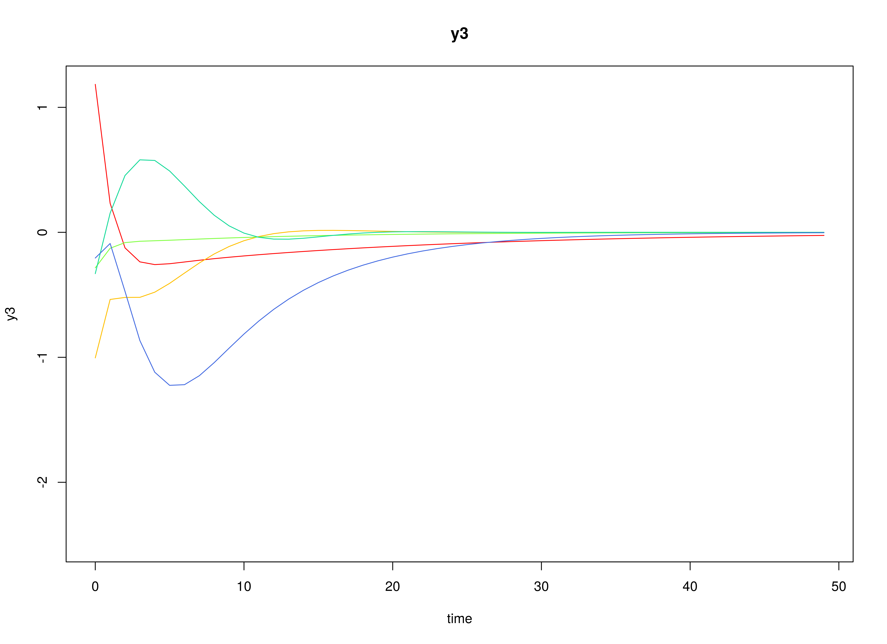
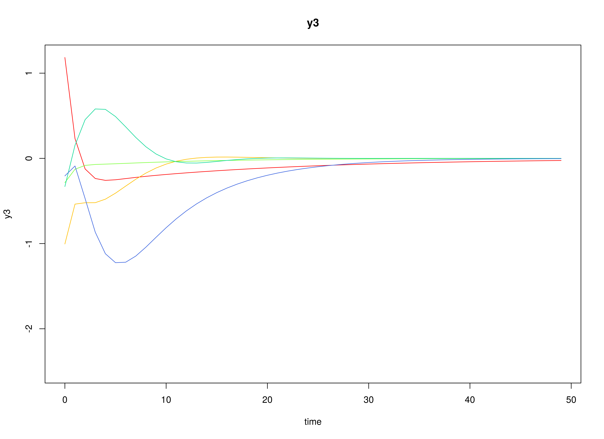

Multivariate Meta-Analysis of Discrete-Time VAR Estimates (Mixed-Effects Model)
Ivan Jacob Agaloos Pesigan
2024-08-11
Source:vignettes/fit-dt-var-id-mixed.Rmd
fit-dt-var-id-mixed.RmdModel
The measurement model is given by where represents a vector of observed variables and a vector of latent variables for individual and time . Since the observed and latent variables are equal, we only generate data from the dynamic structure.
The dynamic structure is given by where , , and are random variables, and , , and are model parameters. Here, is a vector of latent variables at time and individual , represents a vector of latent variables at time and individual , and represents a vector of dynamic noise at time and individual . denotes a vector of intercepts, a matrix of autoregression and cross regression coefficients, and the covariance matrix of .
An alternative representation of the dynamic noise is given by where .
Data Generation
Notation
Let be the number of time points and be the number of individuals.
Let the initial condition be given by
Let the constant vector be given by
Let the transition matrix be normally distributed with the following means
and covariance matrix
The SimBetaN function from the
simStateSpace package generates random transition matrices
from the multivariate normal distribution. Note that the function
generates transition matrices that are weakly stationary.
Let the dynamic process noise be given by
R Function Arguments
n
#> [1] 10
time
#> [1] 500
mu0
#> [[1]]
#> [1] 0 0 0
sigma0
#> [,1] [,2] [,3]
#> [1,] 1 0 0
#> [2,] 0 1 0
#> [3,] 0 0 1
sigma0_l
#> [[1]]
#> [,1] [,2] [,3]
#> [1,] 1 0 0
#> [2,] 0 1 0
#> [3,] 0 0 1
# first alpha in the list of length n
alpha[[1]]
#> [1] 0 0 0
# first beta in the list of length n
beta[[1]]
#> [,1] [,2] [,3]
#> [1,] 0.6468498 0.02987347 0.09881764
#> [2,] 0.5821253 0.64048586 0.12907652
#> [3,] 0.1217450 0.33748281 0.46598132
psi
#> [,1] [,2] [,3]
#> [1,] 0.1 0.0 0.0
#> [2,] 0.0 0.1 0.0
#> [3,] 0.0 0.0 0.1
psi_l
#> [[1]]
#> [,1] [,2] [,3]
#> [1,] 0.3162278 0.0000000 0.0000000
#> [2,] 0.0000000 0.3162278 0.0000000
#> [3,] 0.0000000 0.0000000 0.3162278
 
Using the SimSSMVARIVary Function from the
simStateSpace Package to Simulate Data
library(simStateSpace)
sim <- SimSSMVARIVary(
n = n,
time = time,
mu0 = mu0,
sigma0_l = sigma0_l,
alpha = alpha,
beta = beta,
psi_l = psi_l
)
data <- as.data.frame(sim)
head(data)
#> id time y1 y2 y3
#> 1 1 0 -0.01667824 0.3471271 -0.5695179
#> 2 1 1 0.05129435 0.2859970 -0.2306270
#> 3 1 2 -0.33999076 0.6114834 -0.2472465
#> 4 1 3 -0.01661439 -0.2579420 0.2733639
#> 5 1 4 -0.50080900 0.2572493 0.1186636
#> 6 1 5 -0.19775105 0.1878050 0.3271472
plot(sim)


Model Fitting
The FitDTVARIDMx function fits a DT-VAR model on each
individual
.
library(fitDTVARMx)
fit <- FitDTVARIDMx(
data = data,
observed = paste0("y", seq_len(k)),
id = "id",
ncores = parallel::detectCores()
)
fit
#>
#> Means of the estimated paramaters per individual.
#> beta_11 beta_21 beta_31 beta_12 beta_22 beta_32
#> 0.65993097 0.50030159 -0.06447561 0.04378504 0.64014151 0.43853603
#> beta_13 beta_23 beta_33 psi_11 psi_22 psi_33
#> -0.03958630 0.01326219 0.49408009 0.10016808 0.09849587 0.09896985Multivariate Meta-Analysis
The MetaVARMx function performs multivariate
meta-analysis using the estimated parameters and the corresponding
sampling variance-covariance matrix for each individual
.
Estimates with the prefix b0 correspond to the estimates of
beta_mu. Estimates with the prefix b1
correspond to the estimates of the effects of x on
y. Note that the effects of x on
y in this case are all zeros. Estimates with the prefix
t2 correspond to the estimates of beta_sigma.
Estimates with the prefix i2 correspond to the estimates of
heterogeniety.
library(metaVAR)
meta <- MetaVARMx(
object = fit,
x = x,
ncores = parallel::detectCores()
)
#> Running Model with 72 parameters
#>
#> Beginning initial fit attempt
#> Running Model with 72 parameters
#>
#> Lowest minimum so far: -271.390852130041
#>
#> Solution found#>
#> Solution found! Final fit=-271.39085 (started at 181.8219) (1 attempt(s): 1 valid, 0 errors)
#> Start values from best fit:
#> 0.657962241220472,0.51033967227259,-0.0567954629371411,0.0436811090007591,0.646664986578893,0.430527116896467,-0.0436390242964322,0.00154840596736853,0.487898856324546,-0.00171536960435824,-0.034191117183634,-0.0113769270104645,0.0127319728424718,-0.0508064711449298,0.0471040811841622,0.01281829562478,0.0546428473180705,0.00622674705947665,-0.0373278899849594,0.014326900038314,0.028172759926688,0.0243067434491325,-0.0599933548337579,0.0411649030024198,-0.00765519846664582,0.0184720225764948,-0.0429177873844594,0.0905260823187534,-0.021491827954899,-0.0684365870852203,-0.0385766717650605,-0.0397820953825144,0.0697830119273889,0.0216721203484656,0.00226476659139843,-0.0387608704309943,0.0938677998194565,0.0560340468885324,-0.00547507779064828,-0.0445965647751857,0.0122944202686715,0.0445209535326955,0.0226673510970409,-0.0177582479425677,0.0803964481064007,-0.00291115918767587,0.0339254072134867,-0.0558721012759551,0.00565473299932731,0.0491000139565992,0.0400736439582104,0.0423325753230253,-0.00259506146832299,0.0589777289459285,0.0182802588818472,0.0231307478025296,-0.0262048351748966,0.0434713659152594,-0.00220143633147934,0.0145752853266376,0.0178717992928919,-0.00739474262589907,0.0314365412417938,-0.0674172052618052,-0.0259762913278114,0.0297884215651565,1.06466555090781e-07,5.12114502520714e-08,-7.09828307697287e-08,1.54526931839517e-08,3.8067107662408e-09,2.2250738585072e-308
summary(meta)
#> est se z p 2.5% 97.5%
#> b0_1 0.6580 0.0318 20.6838 0.0000 0.5956 0.7203
#> b0_2 0.5103 0.0336 15.2090 0.0000 0.4446 0.5761
#> b0_3 -0.0568 0.0407 -1.3940 0.1633 -0.1366 0.0231
#> b0_4 0.0437 0.0211 2.0739 0.0381 0.0024 0.0850
#> b0_5 0.6467 0.0282 22.9417 0.0000 0.5914 0.7019
#> b0_6 0.4305 0.0379 11.3717 0.0000 0.3563 0.5047
#> b0_7 -0.0436 0.0300 -1.4533 0.1461 -0.1025 0.0152
#> b0_8 0.0015 0.0238 0.0649 0.9482 -0.0452 0.0483
#> b0_9 0.4879 0.0251 19.4167 0.0000 0.4386 0.5371
#> b1_11 -0.0017 0.0389 -0.0441 0.9648 -0.0779 0.0745
#> b1_21 -0.0342 0.0410 -0.8342 0.4042 -0.1145 0.0461
#> b1_31 -0.0114 0.0499 -0.2279 0.8197 -0.1092 0.0865
#> b1_41 0.0127 0.0264 0.4831 0.6291 -0.0389 0.0644
#> b1_51 -0.0508 0.0349 -1.4542 0.1459 -0.1193 0.0177
#> b1_61 0.0471 0.0468 1.0058 0.3145 -0.0447 0.1389
#> b1_71 0.0128 0.0367 0.3494 0.7268 -0.0591 0.0847
#> b1_81 0.0546 0.0290 1.8835 0.0596 -0.0022 0.1115
#> b1_91 0.0062 0.0306 0.2032 0.8390 -0.0538 0.0663
#> b1_12 -0.0373 0.0378 -0.9880 0.3232 -0.1114 0.0367
#> b1_22 0.0143 0.0398 0.3600 0.7188 -0.0637 0.0923
#> b1_32 0.0282 0.0484 0.5822 0.5605 -0.0667 0.1230
#> b1_42 0.0243 0.0253 0.9616 0.3362 -0.0252 0.0738
#> b1_52 -0.0600 0.0336 -1.7847 0.0743 -0.1259 0.0059
#> b1_62 0.0412 0.0451 0.9127 0.3614 -0.0472 0.1296
#> b1_72 -0.0077 0.0355 -0.2155 0.8294 -0.0773 0.0620
#> b1_82 0.0185 0.0281 0.6564 0.5116 -0.0367 0.0736
#> b1_92 -0.0429 0.0297 -1.4438 0.1488 -0.1012 0.0153
#> t2_1_1 0.0082 0.0042 1.9436 0.0519 -0.0001 0.0165
#> t2_2_1 -0.0019 0.0032 -0.6033 0.5463 -0.0083 0.0044
#> t2_3_1 -0.0062 0.0043 -1.4437 0.1488 -0.0146 0.0022
#> t2_4_1 -0.0035 0.0024 -1.4776 0.1395 -0.0081 0.0011
#> t2_5_1 -0.0036 0.0029 -1.2421 0.2142 -0.0093 0.0021
#> t2_6_1 0.0063 0.0041 1.5407 0.1234 -0.0017 0.0144
#> t2_7_1 0.0020 0.0029 0.6753 0.4995 -0.0037 0.0077
#> t2_8_1 0.0002 0.0022 0.0917 0.9269 -0.0042 0.0046
#> t2_9_1 -0.0035 0.0026 -1.3454 0.1785 -0.0086 0.0016
#> t2_2_2 0.0093 0.0047 1.9600 0.0500 0.0000 0.0185
#> t2_3_2 0.0067 0.0046 1.4726 0.1409 -0.0022 0.0157
#> t2_4_2 0.0003 0.0021 0.1502 0.8806 -0.0038 0.0044
#> t2_5_2 -0.0033 0.0030 -1.0939 0.2740 -0.0093 0.0026
#> t2_6_2 -0.0003 0.0038 -0.0916 0.9270 -0.0077 0.0071
#> t2_7_2 0.0037 0.0032 1.1559 0.2477 -0.0026 0.0100
#> t2_8_2 0.0021 0.0024 0.8500 0.3953 -0.0027 0.0069
#> t2_9_2 -0.0008 0.0025 -0.3330 0.7391 -0.0057 0.0041
#> t2_3_3 0.0143 0.0069 2.0667 0.0388 0.0007 0.0278
#> t2_4_3 0.0021 0.0026 0.8006 0.4234 -0.0030 0.0072
#> t2_5_3 0.0030 0.0035 0.8366 0.4028 -0.0040 0.0099
#> t2_6_3 -0.0086 0.0054 -1.5881 0.1123 -0.0192 0.0020
#> t2_7_3 0.0015 0.0037 0.4013 0.6882 -0.0057 0.0086
#> t2_8_3 0.0051 0.0033 1.5386 0.1239 -0.0014 0.0115
#> t2_9_3 0.0049 0.0034 1.4275 0.1534 -0.0018 0.0116
#> t2_4_4 0.0033 0.0019 1.7887 0.0737 -0.0003 0.0070
#> t2_5_4 0.0016 0.0018 0.8540 0.3931 -0.0020 0.0052
#> t2_6_4 -0.0001 0.0024 -0.0421 0.9664 -0.0048 0.0046
#> t2_7_4 -0.0003 0.0019 -0.1690 0.8658 -0.0041 0.0034
#> t2_8_4 0.0006 0.0015 0.4190 0.6752 -0.0023 0.0035
#> t2_9_4 0.0004 0.0016 0.2352 0.8140 -0.0027 0.0034
#> t2_5_5 0.0066 0.0033 1.9819 0.0475 0.0001 0.0132
#> t2_6_5 -0.0055 0.0036 -1.5134 0.1302 -0.0126 0.0016
#> t2_7_5 -0.0021 0.0026 -0.7974 0.4252 -0.0072 0.0030
#> t2_8_5 0.0013 0.0020 0.6483 0.5168 -0.0026 0.0052
#> t2_9_5 0.0034 0.0024 1.4621 0.1437 -0.0012 0.0081
#> t2_6_6 0.0126 0.0060 2.0893 0.0367 0.0008 0.0244
#> t2_7_6 0.0007 0.0034 0.1979 0.8431 -0.0060 0.0073
#> t2_8_6 -0.0018 0.0027 -0.6546 0.5127 -0.0072 0.0036
#> t2_9_6 -0.0058 0.0034 -1.6718 0.0946 -0.0125 0.0010
#> t2_7_7 0.0076 0.0038 1.9927 0.0463 0.0001 0.0150
#> t2_8_7 0.0038 0.0024 1.5453 0.1223 -0.0010 0.0086
#> t2_9_7 -0.0040 0.0026 -1.5527 0.1205 -0.0090 0.0010
#> t2_8_8 0.0045 0.0024 1.8871 0.0591 -0.0002 0.0091
#> t2_9_8 0.0000 0.0018 -0.0196 0.9843 -0.0035 0.0034
#> t2_9_9 0.0051 0.0027 1.9051 0.0568 -0.0001 0.0103
#> i2_1 0.8675 0.0591 14.6755 0.0000 0.7516 0.9833
#> i2_2 0.8814 0.0533 16.5374 0.0000 0.7770 0.9859
#> i2_3 0.9198 0.0357 25.7697 0.0000 0.8498 0.9898
#> i2_4 0.7956 0.0909 8.7485 0.0000 0.6173 0.9738
#> i2_5 0.8872 0.0505 17.5660 0.0000 0.7882 0.9862
#> i2_6 0.9371 0.0282 33.2267 0.0000 0.8818 0.9924
#> i2_7 0.8991 0.0455 19.7529 0.0000 0.8099 0.9883
#> i2_8 0.8430 0.0701 12.0223 0.0000 0.7055 0.9804
#> i2_9 0.8575 0.0642 13.3636 0.0000 0.7317 0.9832